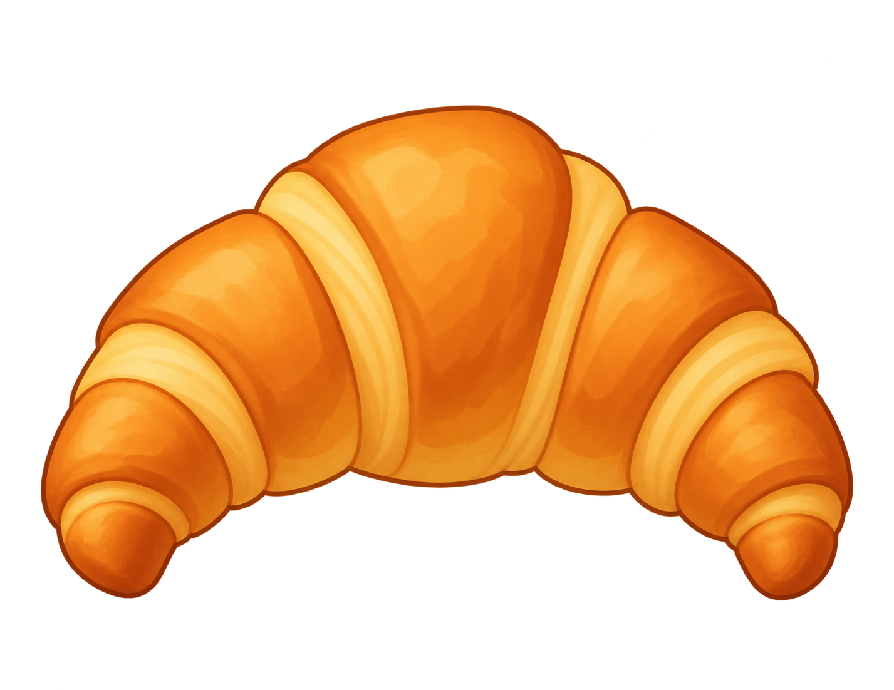

Story
Follow the map through shops, earn stars and sort bigger boards. No countdown.
A small break. A satisfying match.
Match three snacks, clear a shelf, and find your next little victory. Your Tasty Swoop support corner is right here.
Offline play. No account needed.

THREE OF A KIND. ONE TASTY MATCH.Find your pace
Follow the map through shops, earn stars and sort bigger boards. No countdown.
Start at 60 seconds. Every matching triple adds 5 seconds. How far can you go?
Three minutes on the clock. Match as many triples as you can before time runs out.
A little help
No. You can play without signing in, and gameplay works offline. Your progress stays on your device.
Drag a front-row item to an empty front space. You can also tap an item and then tap an empty spot. Three identical snacks on one shelf clear; empty the whole front row to reveal the row behind it.
Tap the gear on the main menu. During a game, use the pause/settings button. The app supports English and Ukrainian.
There is no account or developer cloud-save service. Progress is stored locally, so deleting the app can remove it. Apple device backups may retain data depending on your settings.